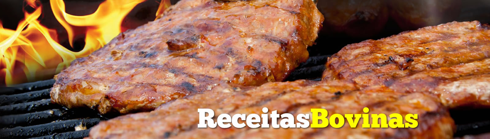
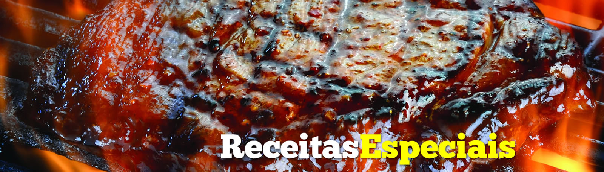
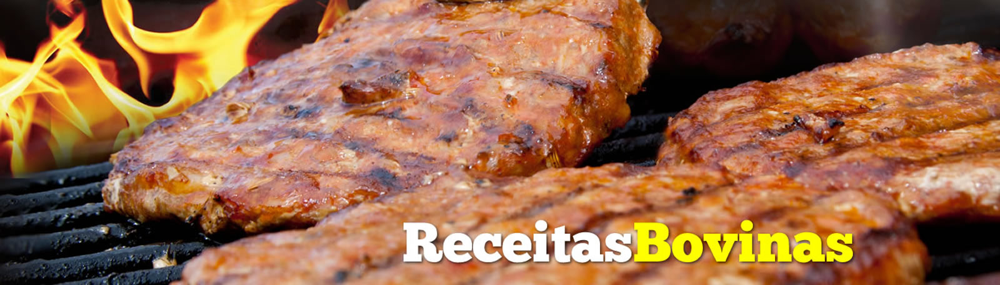
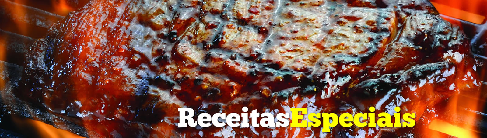

Costelinha Suina ao Molho Barbie Kill

Receita
Ingredientes:
- 1 kg de Costelinha Suína
- Sal
- Pimenta do Reino
- Alho
- Suco de 1 limão
- Molho Barbecue
Modo de Preparo:
Tempere a costela com sal, alho e pimenta a gosto. Jogue o suco de limão e deixe descansar por 2 horas. Aqueça a churrasqueira, quando estiver quente coloque a costelinha em uma grelha ou no espeto. Vire assando cada lado até ficar dourado. Aplique o molho barbecue.
Receita retirada do site www.churrasquito.com.br